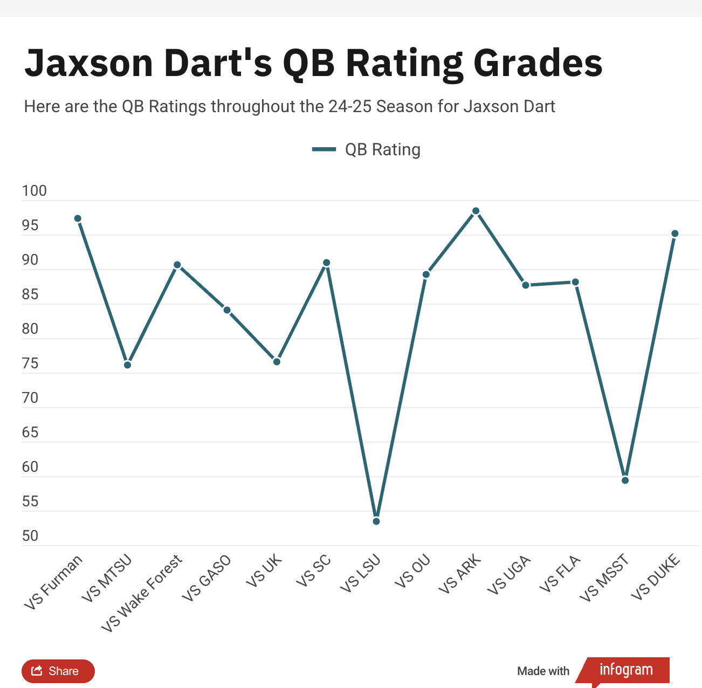

This time of year, we, the media, hammer you over the head with NFL mock drafts.
Why? Because you demand them. Don’t deny it. I can see the metrics. You love them. You crave them. You scroll mindlessly until you see your team, and then you either nod in agreement or scream at the writer for being a dope.
Well, get your voice box ready. Because in this mock, we go in a wild direction. In this exercise, all 32 first-round picks are traded, and just for the anarchy of it all, we’re only using 2025 draft choices to make the transactions happen.
The rules are simple. Each trade has to be fair, and in that endeavor, we’re using the Rich Hill trade chart, which is popular within the NFL. Additionally, the trades have to make sense. Teams aren’t wildly trading up for funsies.
Alright, let’s start with the legitimate draft order, with the point values of each first-round pick in parentheses.
1. Tennessee Titans (1,000)
2. Cleveland Browns (717)
3. New York Giants (514)
4. New England Patriots (491)
5. Jacksonville Jaguars (468)
6. Las Vegas Raiders (446)
7. New York Jets (426)
8. Carolina Panthers (406)
9. New Orleans Saints (387)
10. Chicago Bears (369)
11. San Francisco 49ers (358)
12. Dallas Cowboys (347)
13. Miami Dolphins (336)
14. Indianapolis Colts (329)
15. Atlanta Falcons (315)
16. Arizona Cardinals (305)
17. Cincinnati Bengals (296)
18. Seattle Seahawks (287)
19. Tampa Bay Buccaneers (278)
20. Denver Broncos (269)
21. Pittsburgh Steelers (261)
22. Los Angeles Chargers (253)
23. Green Bay Packers (245)
24. Minnesota Vikings (237)
25. Houston Texans (230)
26. Los Angeles Rams (223)
27. Baltimore Ravens (216)
28. Detroit Lions (209)
29. Washington Commanders (202)
30. Buffalo Bills (196)
31. Kansas City Chiefs (190)
32. Philadelphia Eagles (184)
Alright, onto the deals.
1. Cleveland Browns: Cam Ward, QB, Miami (FL)
The deal: Titans trade No. 1 (1,000) to Browns for No. 2 (717), No. 33 (180), No. 67 (75), No. 104 (33) and No. 200 (5)
Tennessee has to relinquish the opportunity to draft Ward, but also gets a bunch of draft picks to give it 12 total in the draft, including six in the top 105. As for the Browns, they get Ward, who they hope will finally answer the never-ending question of franchise quarterback in Cleveland.
2. Tennessee Titans: Travis Hunter, WR/CB, Colorado
The deal: Browns trade No. 2 (717), No. 33 (180), No. 67 (75), No. 104 (33) and No. 200 (5) to Titans for No. 1 (1,000)
The Titans receive a boatload of draft capital and move back just one spot. Instead of taking a quarterback, Tennessee takes the best player in the draft. Hunter can play on either side of the ball and at positions Tennessee desperately needs to upgrade. It’s a great start for general manager Mike Borgonzi.
3. Las Vegas Raiders: Shedeur Sanders, QB, Colorado
The deal: Giants trade No. 3 (514) to Raiders for No. 6 (446) and No. 68 (73)
With Jameis Winston and Russell Wilson in tow for 2025, Giants general manager Joe Schoen trades back three spots with the Raiders, who move up for their long-term answer under center. While Las Vegas gave Geno Smith an extension, Smith is the perfect player for Sanders to sit behind for a year and learn before eventually taking over.
4. Carolina Panthers: Abdul Carter, edge, Penn State
The deal: Patriots trade No. 4 (491), No. 217 (3) and No. 220 (3) to Panthers for No. 8 (406), No. 74 (64) and No. 111 (29)
Carolina shores up its defense, moving up four spots to do so. If not Hunter, Carter is the best player in this draft. The Penn State edge rusher was a menace in the Big Ten last year and could be the long-term replacement for Brian Burns. With the Nittany Lions in 2024, Carter racked up 12 sacks and a nation-high 24 tackles for loss.
5. New York Jets: Armand Membou, OT, Missouri
The deal: Jaguars trade No. 5 (468) to Jets for No. 7 (426), No. 110 (30) and No. 145 (13)
Last year, the Jets took care of left tackle with Olu Fashanu. Now, they take care of the right side. Moving up two spots with Jacksonville, New York takes the most complete tackle prospect in the draft. Membou is an immediate plug-and-play starter to protect Justin Fields, while the Jaguars pick up a pair of top-150 picks.
6. New York Giants: Tyler Warren, TE, Penn State
The deal: Raiders trade No. 6 (446) and No. 68 (73) to Giants for No. 3 (514)
If the Giants move back, Warren would be an intriguing pick here. Considered by many the best tight end in a very strong class, he would become a quality weapon alongside second-year star receiver Malik Nabers. While New York would love to solve its quarterback issues, the answer might have to wait a year. In the meantime, the Giants grab a stud to add punch to the offense.
7. Jacksonville Jaguars: Mason Graham, DT, Michigan
The deal: Jets trade No. 7 (426), No. 110 (30) and No. 145 (13) to Jaguars for No. 5 (468)
After moving back two spots, Jacksonville gets its hands on a top-five talent in Graham. The Jaguars have to build up numerous areas of the roster and defensive line is one of them, especially on the interior. Graham is arguably the third-best player in the draft behind Hunter and Carter, and would give Jacksonville a quality defensive tackle to play between Josh Hines-Allen and Travon Walker.
8. New England Patriots: Tetairoa McMillan, WR, Arizona
The deal: Panthers trade No. 8 (406), No. 74 (64) and No. 111 (29) to Patriots for No. 4 (491), No. 217 (3) and No. 220 (3)
New England added Stefon Diggs and Mack Hollins in free agency, but the receiver room is a bit light. After sliding back four spots with the Panthers, general manager Eliot Wolf acquires a pair of additional top-120 picks and still gets the draft’s top receiver in McMillan. At 6'5", McMillan would prove a big target for second-year quarterback Drake Maye, who holds the keys to New England’s short- and long-term prospects.
9. San Francisco 49ers: Jalon Walker, LB, Georgia
The deal: Saints trade No. 9 (387) to 49ers for No. 11 (358) and No. 113 (28)
The Niners are overhauling their roster to a large degree, and they could take a big swing with Walker. Moving up two spots with the Saints, San Francisco gets a player in Walker who could either be an off-ball linebacker or an edge rusher, depending on the perspective of the coaching staff.
10. Denver Broncos: Ashton Jeanty, RB, Boise State
The deal: Bears trade No. 10 (369) and No. 148 (13) to Broncos for No. 20 (269) and No. 51 (112)
The Broncos made a surprise run to the postseason in 2024, and now are focused on advancing in the playoffs. Denver needs to upgrade the weaponry around second-year quarterback Bo Nix, and Jeanty would be a big piece to the puzzle after totaling 2,601 rushing yards and 29 touchdowns last year at Boise State.
11. New Orleans Saints: Will Johnson, CB, Michigan
The deal: 49ers trade No. 11 (358) and No. 113 (28) to Saints for No. 9 (387)
After losing Paulson Adebo in free agency to the Giants, New Orleans has a hole in its secondary. After moving back two spots, Saints general manager Mickey Loomis has the opportunity to add the draft’s top corner in Johnson, who is coming off a three-year career at Michigan featuring nine interceptions and a national title.
12. Los Angeles Chargers: Mykel Williams, edge, Georgia
The deal: Cowboys trade No. 12 (347) and No. 174 (8) to Chargers for No. 22 (253) and No. 55 (101)
Like the Broncos, the Chargers are another AFC West team making a big move up the draft board. Los Angeles released the oft-injured Joey Bosa this offseason and didn’t sign a suitable replacement. With Williams still on the board, general manager Joe Horitz gets aggressive and adds a quality pass rusher from a perennial SEC power.
13. Arizona Cardinals: Will Campbell, OL, LSU
The deal: Dolphins trade No. 13 (336) to Cardinals for No. 16 (305), No. 115 (27) and No. 225 (3)
Arizona has needs on the interior offensive line. Campbell’s arms have been a topic of discussion for over a month after measuring at 32⅝ inches at the combine. If the Cardinals see him as a guard, he’s a perfect fit. If they view him as a tackle, he could still be the right move with Jonah Williams entering the final year of his deal.
14. Green Bay Packers: Jahdae Barron, CB, Texas
The deal: Colts trade No. 14 (329) and No. 117 (26) to Packers for No. 23 (249) and No. 54 (104)
Green Bay hasn’t had a great track record of taking corners in the first round, but with Eric Stokes gone and an uncertain future regarding Jaire Alexander, Barron would make a ton of sense. This is a significant trade-up, with Green Bay surrendering its second-rounder. Still, the Texas product is an All-American and five-year contributor for the Longhorns.
15. Cincinnati Bengals: Shemar Stewart, edge, Texas A&M
The deal: Falcons trade No. 15 (315) and No. 218 (3) to Bengals for No. 17 (296) and No. 115 (25)
Stewart might be the ultimate boom-or-bust prospect in the first round. He ran a 4.59 40-yard-dash at 267 pounds. Still, he wasn’t particularly dominant with the Aggies, totaling 1.5 sacks in each of his three seasons at College Station. That said, if he hits his ceiling, he could be a steal for Cincinnati.
16. Miami Dolphins: Kelvin Banks Jr., OT, Texas
The deal: Cardinals trade No. 16 (305), No. 115 (27) and No. 225 (3) to Dolphins for No. 13 (336)
Miami moves back three spots to pick up a fourth-round pick and lands Banks to shore up the offensive line. The Dolphins are getting a potential tackle to replace Terron Armstead, a 12-year veteran. Worst-case scenario, Banks kicks inside and helps create a stout interior for the oft-injured Tua Tagovailoa.
17. Atlanta Falcons: Mike Green, edge, Marshall
The deal: Bengals trade No. 17 (296) and No. 115 (25) to Falcons for No. 15 (315) and No. 218 (3)
The Falcons are perpetually looking to find edge rush, and they’ve had little success in recent years, including last year’s trade for Matthew Judon. In this scenario, Atlanta gives up a fourth-rounder to take Green, who some believe is the best pure pass rusher in the draft outside of Carter. With the Thundering Herd, he had a nation-leading 17 sacks last season.
18. Houston Texans: Matthew Golden, WR, Texas
The deal: Seahawks trade No. 18 (287) to Texans for No. 25 (230) and No. 79 (57)
The Texans move up to give Nico Collins some help on the opposite side. Houston needs to rebuild its receiving corps after losing Diggs to free agency and seeing Tank Dell possibly lost for the season with a gruesome knee injury sustained in the postseason. The cost of doing business is a third-rounder, but the Texans get a potential star to pair with Collins.
19. Baltimore Ravens: Nick Emmanwori, S, South Carolina
The deal: Buccaneers trade No. 19 (278) to Ravens for No. 27 (216), No. 91 (44) and No. 136 (17)
The Ravens have the league’s best safety in Kyle Hamilton, but there are questions next to him. The defense ranked near the bottom of the league last season until Ar’Darius Washington became the other starter. However, Washington is in a contract year and Baltimore has a tight cap situation. Taking Emmanwori, who has an elite tape-measurables combo, could serve as a perfect fit.
20. Chicago Bears: Malaki Starks, S, Georgia
The deal: Broncos trade No. 20 (269) and No. 51 (112) to Bears for No. 10 (369) and No. 148 (13)
After moving back 10 spots with the Broncos to add a second-round pick (giving the Bears three of them), Chicago general manager Ryan Poles gets a premium safety prospect to pair with Jaquan Brisker. The two-time All-American started 42 games for the Bulldogs. He also ran a 4.5 40-time at 197 pounds.
21. Kansas City Chiefs: Walter Nolen, DT, Ole Miss
The deal: Steelers trade No. 21 (261) and No. 185 (6) to Chiefs for No. 31 (190) and No. 66 (76)
Kansas City has a history of moving around the draft board under general manager Brett Veach, and the AFC champs move up 10 slots to land Nolen out of Ole Miss. Nolen stands 6'4" and 296 pounds, and can play both inside with the occasional move outside. He was an All-American last season with 6.5 sacks, giving him 10.5 over the past two campaigns.
22. Dallas Cowboys: Omarion Hampton, RB, North Carolina
The deal: Chargers trade No. 22 (253) and No. 55 (101) to Cowboys for No. 12 (347) and No. 174 (8)
Moving back 10 spots, the Cowboys walk away with an incredible haul. Not only does Dallas pick up an extra second-round pick, but it lands Hampton, giving the offense an immediate boost. At North Carolina, he ran for 3,164 and 30 touchdowns over the past two years, leading the ACC in both campaigns.
23. Indianapolis Colts: Colston Loveland, TE, Michigan
The deal: Packers for No. 23 (249) and No. 54 (104) to Colts for No. 14 (329) and No. 117 (26)
Much like the Cowboys, this would be serendipity for the Colts. Indianapolis has needed a quality tight end for years and finds one here in Loveland, who amassed 1,466 receiving yards and 11 touchdowns in his college career. He’d be an ideal fit in coach Shane Steichen’s offense.
24. Los Angeles Rams: Jihaad Campbell, LB, Alabama
The deal: Vikings trade No. 24 (237) to Rams for No. 26 (223), No. 195 (5), No. 201 (5) and No. 202 (4)
The Rams have one of the best, young front fours in the game. However, they could use a little punch at the second level. Enter Campbell, who might be the best pure linebacker in this class. Campbell was a star for the Crimson Tide, posting 117 tackles and five sacks last season. He also has some chops in pass coverage, totaling two interceptions.
25. Seattle Seahawks: Grey Zabel, IOL, North Dakota State
The deal: Texans trade No. 25 (230) and No. 79 (57) to Seahawks for No. 18 (287)
Seattle has revamped its offense, but it desperately needs help with the interior of its offensive line. Zabel would be exactly that. He’s enjoying an excellent predraft process, including a dominant showing at the Senior Bowl, before having a quality combine as well. At 312 pounds, he still has room to fill out, but the movement skills and agility are clearly strengths.
26. Minnesota Vikings: Azareye’h Thomas, CB, Florida State
The deal: Rams trade No. 26 (223), No. 195 (5), No. 201 (5) and No. 202 (4) to Vikings for No. 24 (237)
The Vikings enter the draft with only four selections, the fewest of any team. By moving back two spots, they would nab an additional three picks and still get Thomas in this scenario. Minnesota added a pair of defensive tackles in free agency with Javon Hargrave and Jonathan Allen, but needs a cornerback. Thomas fits the bill, checking in at 6'1" and 197 pounds. He’s a physical, press corner who is a match for coordinator Brian Flores’s scheme.
27. Tampa Bay Buccaneers: Donovan Ezeiruaku, edge, Boston College
The deal: Ravens trade No. 27 (216), No. 91 (44) and No. 136 (17) to Buccaneers for No. 19 (278)
The Buccaneers move back eight spots and pick up third- and fourth-round picks. Ezeiruaku starred last year as a senior for Boston College, registering 16.5 sacks to give him 30 in his four-year career with the Eagles. Tampa Bay needed more pass rush, and Ezeiruaku profiles as a Day 1 starter.
28. Philadelphia Eagles: Derrick Harmon, DT, Oregon
The deal: Lions trade No. 28 (209) to Eagles for No. 32 (184), No. 134 (17) and No. 161 (10)
Nobody loves to take linemen more than Eagles general manager Howie Roseman. He does so again here in an effort to replace Milton Williams and lands Harmon, who will become an instant starter on the defensive interior alongside Jalen Carter. At Oregon, Harmon racked up 45 tackles and five sacks after three years with Michigan State.
29. Buffalo Bills: Maxwell Hairston, CB, Kentucky
The deal: Commanders trade No. 29 (202) to Bills for No. 30 (196) and No. 177 (8)
General manager Brandon Beane spent most of the offseason extending his young talent, but now’s the time to fix the secondary. While Christian Benford is a stud on one side, the Bills need a corner opposite him with Rasul Douglas hitting the market. Hairston started 20 games over the past two years with the Wildcats and ran a blazing 4.28 40-yard dash at the combine. The main question is his size at 5'11" and 183 pounds.
30. Washington Commanders: Kenneth Grant, DT, Michigan
The deal: Bills trade No. 30 (196) and No. 177 (8) to Commanders for No. 29 (202)
After releasing Jonathan Allen prior to free agency, the Commanders have work to do on their defensive line. Considering coach Dan Quinn has a strong background on that side of the ball, finding Allen’s replacement in a great class for that position is a priority. Grant is a monster at 331 pounds who also has the quickness and strength to collapse the pocket.
31. Pittsburgh Steelers: Jaxson Dart, QB, Ole Miss
The deal: Chiefs trade No. 31 (190) and No. 66 (76) to Steelers for No. 21 (261) and No. 185 (6)
Even if the Steelers sign Aaron Rodgers, he’s going to be 42 years old this winter. They need a long-term answer at quarterback, and Dart could be it. Playing with the Rebels over the past three years, he’s played in 39 games and thrown for 72 touchdowns against 22 interceptions. Dart also has decent size at 6'2" and 225 pounds. Overall, sitting for a year and getting NFL coaching would be beneficial.
32. Detroit Lions: Tyler Booker, G, Alabama
The deal: Eagles trade No. 32 (184), No. 134 (17) and No. 161 (10) to Lions for No. 28 (209)
The Lions get their replacement for the departed Kevin Zeitler. Detroit loves to build through the trenches and Booker has an argument as the best guard in what is a very good class. At Alabama, Booker started 26 games and at 6'5" and 321 pounds has perfect size. He projects as an immediate, impact starter.